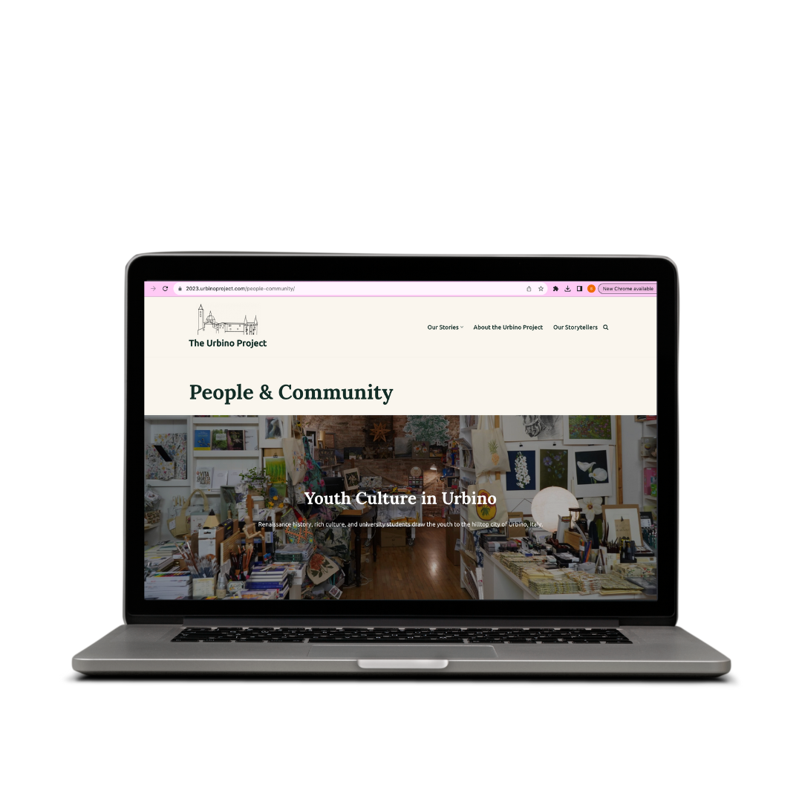
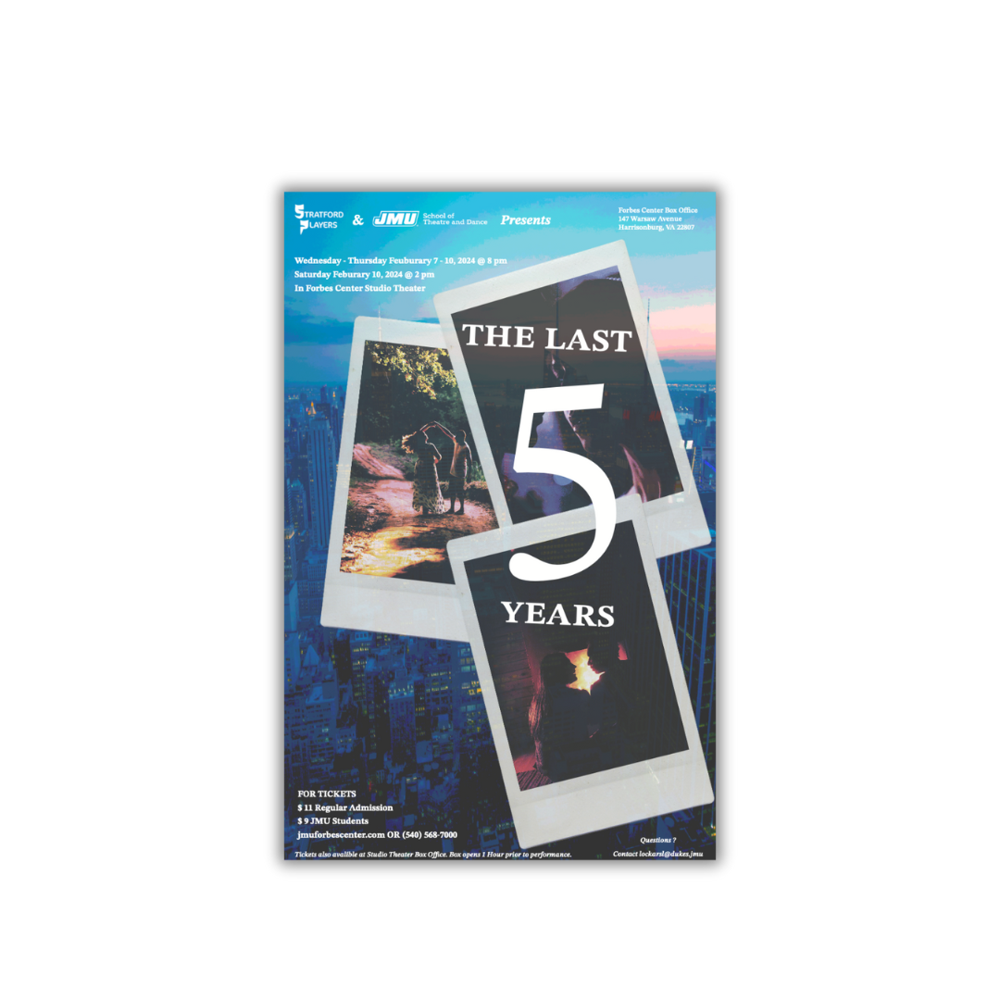

Recent Projects
March 2024
Cyber Solutions
Senior capstone — a management system for Madison County government officials to collaborate and analyze data.
View project →

June–July 2023
Urbino Project
Study abroad in Italy — WordPress people & community webpage built responsive from scratch.
View project →

December 2023
Canvas "To Do" tab redesign
Revised the mobile tab and brought the feature to desktop — user research, wireframes, and Figma prototypes for both platforms.
View project →
